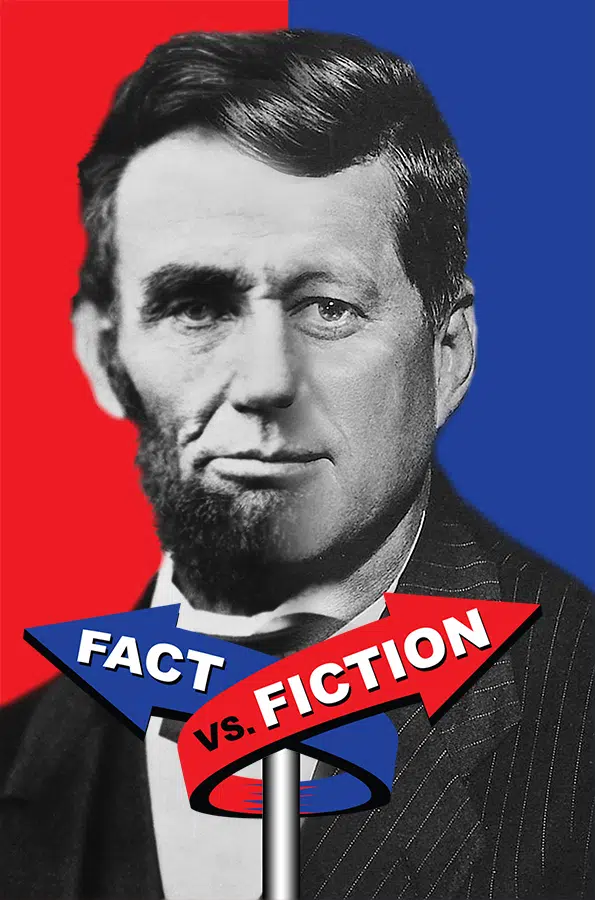

For decades, conspiracy theorists have speculated about the eerie connections between Abraham Lincoln and John F. Kennedy. The similarities in their lives, political careers, and assassinations have led some to believe that JFK was actually the reincarnation of Lincoln. This theory suggests that history repeated itself in an almost supernatural manner, with Kennedy living out Lincoln’s unfinished destiny.
One of the most widely discussed aspects of this theory is the nearly identical circumstances of their assassinations. Both Lincoln and Kennedy were shot in the head on a Friday. Lincoln was killed at Ford’s Theatre, while Kennedy was shot in a Lincoln car made by the Ford Motor Company. The supposed reincarnation theory argues that Kennedy’s fate was an unavoidable echo of his past life as Lincoln.
The coincidences don’t stop there. Lincoln was elected to Congress in 1846; Kennedy in 1946. Lincoln became president in 1860; Kennedy in 1960. Their vice presidents—Andrew Johnson and Lyndon B. Johnson—shared not only the same last name but were both born exactly 100 years apart (1808 and 1908). Additionally, both assassins, John Wilkes Booth and Lee Harvey Oswald, were known by three names, had fifteen letters in their full names, and were killed before they could stand trial.
Some believers take the theory even further, claiming that JFK’s leadership style, advocacy for civil rights, and tragic end were part of a cosmic cycle. They argue that Kennedy subconsciously carried Lincoln’s unfinished mission into the 20th century, attempting to further the progress that Lincoln had started before his untimely death.
While historians and skeptics dismiss the reincarnation theory as mere coincidence, it has gained traction among certain conspiracy circles. Some view the similarities as statistical anomalies, while others believe there is a deeper, possibly supernatural, explanation.
Officially, there is no scientific evidence to support reincarnation or any paranormal link between the two presidents. However, the idea has persisted in books, internet forums, and documentaries, with believers convinced that Kennedy’s life was too similar to Lincoln’s to be random chance.
Regardless of whether one believes in reincarnation, the theory has undeniably contributed to the enduring legacies of both Lincoln and Kennedy. Their strikingly similar paths have fascinated historians and conspiracy theorists alike, keeping their names forever linked in American history.
The discussion of these eerie connections has also sparked broader conversations about fate, destiny, and whether history has a way of repeating itself in unexpected ways. Whether one sees it as proof of reincarnation or merely a string of coincidences, the theory serves as a reminder of the lasting impact both leaders had on the nation.
The idea that John F. Kennedy was Abraham Lincoln reincarnated remains one of the most intriguing and debated conspiracy theories in American history. While skeptics attribute the similarities to chance, believers continue to search for deeper meaning, convinced that the parallels are too strong to ignore.
Ultimately, whether this theory is seen as fact or fiction, it highlights the profound influence both men had on the world— and the seemingly unbreakable thread that ties their stories together.
